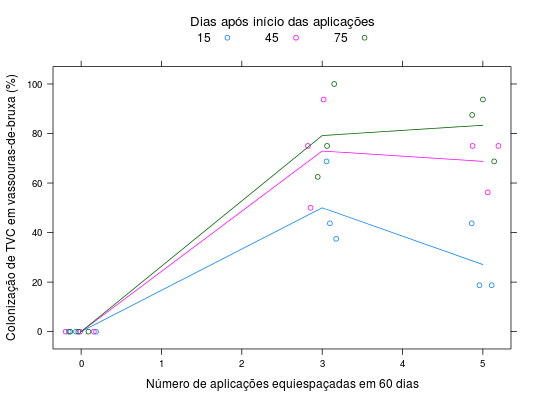

Os dados referem-se a contagem da colonização de um antagonista (trichoderma - TVC) aplicado sobre as vassouras-de-bruxa de uma cultura de cacau no Município de Ibatuma - BA em em 2000. Foram consideradas 3 intervalos de aplicação e as avaliações foram feitas em 3 tempos. O experimento foi instaldo em delineamento de blocos casualizados.
Um data.frame com 27 observações e 4 variáveis, em que
aplicavalibloccolonAs parcelas da testemunha, que não receberam aplicação de TVC, exibiram um valor 0 para a colonização das vassouras-de-bruxa.
FARIA (2009), Quadro 12.5, pág. 159.
library(lattice) data(FariaQd12.5)#> Warning: data set ‘FariaQd12.5’ not foundstr(FariaQd12.5)#> 'data.frame': 27 obs. of 4 variables: #> $ aplic: num 5 5 5 5 5 5 5 5 5 3 ... #> $ avali: num 15 45 75 15 45 75 15 45 75 15 ... #> $ bloc : Factor w/ 3 levels "1","2","3": 1 1 1 2 2 2 3 3 3 1 ... #> $ colon: num 18.8 56.2 68.8 43.8 75 ...xtabs(~aplic + avali, data = FariaQd12.5)#> avali #> aplic 15 45 75 #> 0 3 3 3 #> 3 3 3 3 #> 5 3 3 3xyplot(colon ~ aplic, data = FariaQd12.5, groups = avali, type = c("p", "a"), jitter.x = TRUE, xlab = "Número de aplicações equiespaçadas em 60 dias", ylab = "Colonização de TVC em vassouras-de-bruxa (%)", auto.key = list(title = "Dias após início das aplicações", cex.title = 1.1, columns = 3))